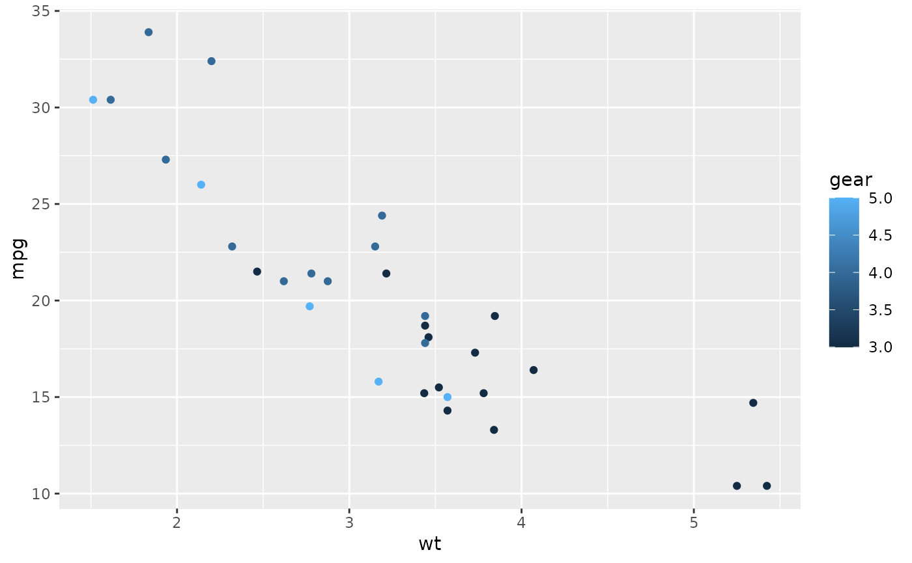
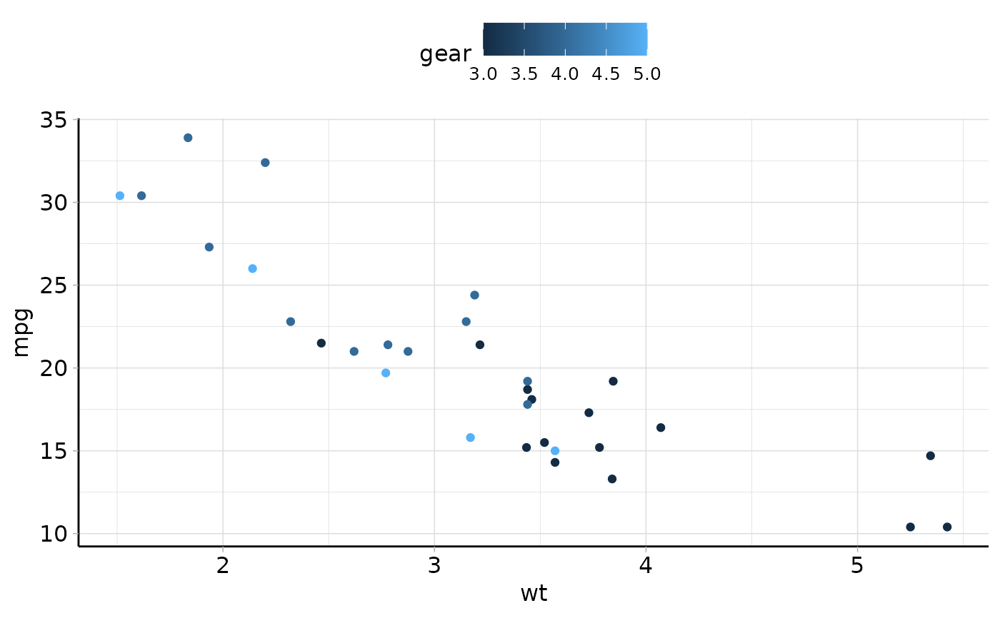

The theme is heavily influenced and partly based on ggpubr::theme_pubr().
This theme is applied by default to all autoplot() methods in the mlr3
ecosystem.
If you do not like it and want to use the default ggplot2 theme, you can
add + theme_gray() to the autoplot() call.
theme_mlr3( base_size = 12, base_family = "", border = FALSE, margin = TRUE, legend = c("top", "bottom", "left", "right", "none"), x.text.angle = 0 )
Arguments
| base_size |
|
|---|---|
| base_family |
|
| border |
|
| margin |
|
| legend |
|
| x.text.angle |
|
Examples
library("ggplot2") p = ggplot(mtcars, aes(x = wt, y = mpg)) + geom_point(aes(color = gear)) # Default plot p# theme_mlr3() p + theme_mlr3()